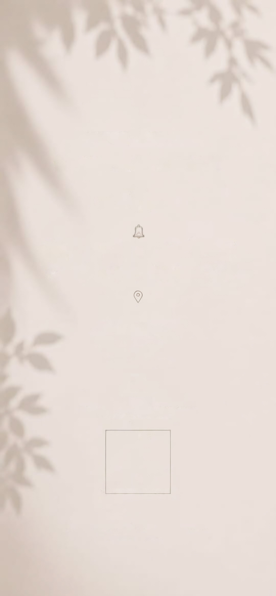
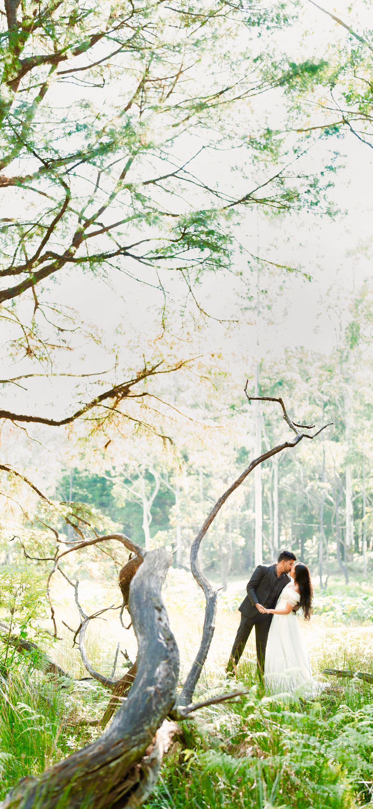

Confirm your
attendance
To help us prepare for a
joyful celebration
Kindly confirm your attendance
RSVPHope to see you there!
04.12.2026
date
Vinrich Lake Resort
venue
Bhagya &. Sadeepa
We are getting married!
And we would love to have you
with us on our big day!

FRIDAY
AT 9.30 AM
DECEMBER
04
2026
PORUWA CEREMONY
9.45 AM
AT
VINRICH LAKE RESORT
(RIVER BANK CHATEAU)
PILIYANDALA
SCAN FOR LOCATION

Counting the days until
To help us prepare for a
joyful celebration
Kindly confirm your attendance
RSVPHope to see you there!